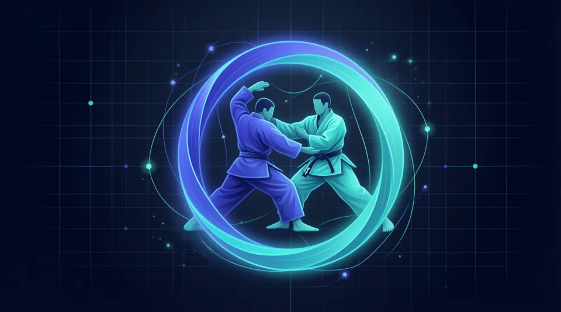
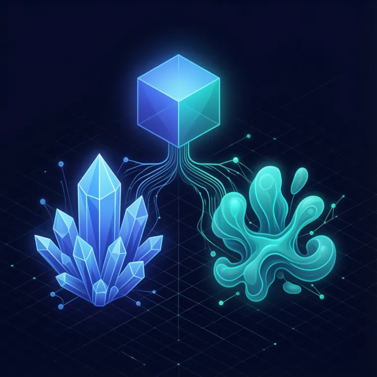

Every session starts from zero
Your assistant gets a persistent, structured memory it can navigate from a single entry point, so context is loaded when it matters and never re-explained.
AI Memory Bank Construction Method by Meta-Harness. AI-KIDO turns the way you work with AI assistants into a structured, shared and lasting practice: a Memory Bank your LLM can navigate, and a path your team can learn.
Language models can transform how you build. But used on the fly, they forget, contradict themselves and leave each developer with their own habits. AI-KIDO replaces improvisation with a shared, durable way of working.
Your assistant gets a persistent, structured memory it can navigate from a single entry point, so context is loaded when it matters and never re-explained.
Truth tables give every fact one home. When sources disagree, the authoritative one is known and the gap is caught early.
A common language, defined roles and shared workflows let a whole team collaborate with AI the same way.
Internal agents validate, rebalance and index your knowledge, so the Memory Bank keeps pace with the project.
AI-KIDO helps your team retain decisions and practices. Kimono, one of its tools, helps assistants find the right passages without loading the whole project.
Carry project knowledge across sessions and make practices available to new teammates instead of rebuilding context with every exchange.
In two research and planning trials, Kimono measured 67.5% and 71.4% lower cumulative input tokens than standard Copilot search.
Evaluate model consumption, team time and operating costs together. Token savings are not a promise of an equivalent reduction in your bill.
Three ideas, applied consistently. Together they turn scattered notes into a knowledge base that both humans and AI can trust.
One tree, one entry point. Knowledge is organized by concepts, techniques, personas and use cases, so an assistant finds exactly what it needs and nothing more.
Truth tables stay flexible and evolve with the project. Hard points lock the decisions you have validated and always win when there is a conflict.
Internal agents search, check compliance, resolve conflicts, fill gaps and update the base, while preserving your project's own context.
A complete toolbox around the method, ready to use from your AI assistant.
A hierarchical Memory Bank that compensates for the model's limits and keeps your project's knowledge available across sessions.
Explore the documentation, the source code, or both in parallel, with search plans adapted to your technology stack.
Detect conflicts between specifications and reality, and arbitrate with a clear hierarchy of truth.
Automatic compliance checks on structure, headers and links, plus a full audit of your base whenever you want one.
Analysis plans from a quick overview to an in-depth expert review, and a project index that is cached for speed.
Update from the official source and choose per file to replace, merge or ignore. Backups and your local context are preserved.
Specialized personas and a RACI matrix classify every document and clarify responsibilities across the team.
Create your own personas and agents →Built on the AGENTS.md and Skills standards, AI-KIDO works today with Claude Code, Claude Cowork, GitHub Copilot, VS Code, Codex, Kiro, Zoo Code, Roo Code, Antigravity and any other tool that follows them.
Choose your installation →From a weekend project to a multi-project organization, in standard or lightweight mode.
Initialize a Memory Bank in minutes and grow it with the project, from the very first prompt.
Analyze what is already there, structure it into truth tables and fill the gaps progressively.
One shared base, common standards and clear roles, so results stay consistent from one person to the next.
The method has already been applied to teaching, fiction writing and observability, as well as software.
The name says it all: "AI" and Aikido, the way of the harmony of energies. Instead of fighting the limits of a language model, you learn to use its energy and turn apparent weaknesses into strengths. A small set of fundamental rules keeps the knowledge base robust, scalable and consistent.
Recursive navigation from a single entry point.
Clear separation between concepts and techniques, personas and use cases.
Continuous improvement based on lessons learned.
File size constraints and a maximum depth of 4 levels.
Consistent navigation in every direction between documents.
Collaborative organization backed by a RACI matrix.

The real challenge is not learning to use AI, but learning to dance with it. The spirit of AI-KIDO
AI-KIDO is a method first. Its tools form a meta-harness: instead of shipping one fixed harness, they help build the harness each task needs, on the fly. You progress through belts, from your first structured prompt to specialized agents and workflows for your production chain, with hands-on katas and a dojo spirit of patience and curiosity.
AI-KIDO is a way of working: rules, hierarchy of truth and a single entry point. It does not depend on any one assistant, model or tool.
Its tools create and assemble personas, agents, skills and commands into harnesses tailored to your needs.
Discover harness creation →Capture useful workflows in the Memory Bank, then adapt and improve them for your next task.
See a practical example →
The single entry point is prompts/index.md. Hard points
(hard_points) are authoritative, followed by the Truth Tables (gen).
prompts/
├── index.md # single entry point
├── hard_points/ # immutable truths (absolute priority)
│ ├── agents/ commands/ system/ ...
└── gen/ # project Truth Tables
├── concepts/ techniques/
├── agents/ personas/
└── use_cases/
agent-aikido-* agents are tools, agents and modes at the same time.
They automate the maintenance of the Memory Bank so your team can focus on building.
Search the documentation, the code, or both in parallel.
Determines the authoritative source when sources conflict.
Checks file compliance and manages document headers.
Rebalances the tree and keeps indexes up to date.
Fills the gaps and classifies new documents.
Updates AI-KIDO while preserving the project's local context.
Choose the package for your assistant and initialize AI-KIDO in your project. The guided setup helps you review the project files before applying them.
After installation, run /init-aikido from your assistant to begin building the project's Memory Bank.
Source repository: github.com/lcalmejane/aikido
Start with a single prompt and a single entry point. The rest of the method grows with you.